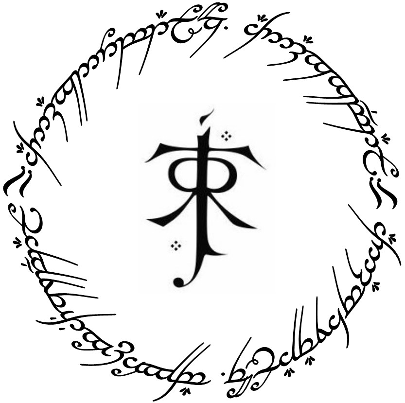

The Lord of the Rings
One Ring to rule them all, One ring to find them; One ring to bring them all and in the darkness bind them.

One Ring to rule them all in Elvish.
Story
- The Fellowship of the Ring Prologue - The prologue explains that the book is "largely concerned with hobbits", and tells of their origins in a migration from the east; of how they smoke "pipe-weed"; of how the Shire, where most of them live, is organised; and how the narrative follows on from The Hobbit, in which the hobbit Bilbo Baggins finds the Ring, which had been in the possession of the creature Gollum.
- Book One - Bilbo celebrates his 111th (eleventy-first as written in the novel) birthday and leaves the Shire suddenly without warning, leaving the Ring to Frodo Baggins, his cousin[c] and heir. Neither hobbit is aware of the Ring's nature, but the wizard Gandalf realises that it is a Ring of Power. Seventeen years later, Gandalf tells Frodo that he has confirmed that the Ring is the one lost by the Dark Lord Sauron long ago and counsels him to take it away from the Shire. Gandalf leaves, promising to return by Frodo's birthday and accompany him on his journey, but fails to do so.
- Book Two - Frodo recovers in Rivendell under Elrond's care. The Council of Elrond discusses the history of Sauron and the Ring. Strider is revealed to be Aragorn, the heir of Isildur. Isildur cut the Ring from Sauron's hand in a prior Age, but refused to destroy it. It was lost when Isildur was slain, finally ending up in Bilbo's possession. Gandalf reports that the chief wizard, Saruman, has betrayed them and is now working to become a power in his own right. Gandalf was captured by Saruman, but escaped, explaining why he had failed to return to meet Frodo as he had promised. The Council decides that the Ring must be destroyed, but that can only be done by sending it to the fire of Mount Doom in Mordor, where it was forged. Frodo takes this task upon himself. Elrond, with the advice of Gandalf, chooses companions for him. The Fellowship of the Ring consists of nine walkers to oppose the nine Black Riders: Frodo, Sam, Merry, Pippin, Aragorn, Gandalf, Gimli the Dwarf, Legolas the Elf, and Boromir, son of Denethor, the Steward of Gondor."
- The Two Towers Book Three - A party of large Orcs, Uruk-hai, sent by Saruman, and other Orcs sent by Sauron and led by Grishnákh, attack the Fellowship. Boromir tries to protect Merry and Pippin from the Orcs, but they kill him and capture the two hobbits. Aragorn, Gimli and Legolas decide to pursue the Orcs taking Merry and Pippin to Saruman. In the kingdom of Rohan, the Orcs are killed by Riders of Rohan, led by Éomer. Merry and Pippin escape into Fangorn Forest, where they are befriended by Treebeard, the oldest of the tree-like Ents. Aragorn, Gimli and Legolas track the hobbits to Fangorn. There they unexpectedly meet Gandalf.
- Book Four - Frodo and Sam, heading for Mordor, struggle through the barren hills and cliffs of the Emyn Muil. They become aware they are being watched and tracked; on a moonlit night they capture Gollum, who has followed them from Moria. Frodo makes Gollum swear to serve him, as Ringbearer, and asks him to guide them to Mordor. Gollum leads them across the Dead Marshes. Sam overhears Gollum debating with his alter ego, Sméagol, whether to break his promise and steal the Ring. They find that the Black Gate of Mordor is too well guarded, so instead they travel south through the land of Ithilien to a secret pass that Gollum knows. On the way, they are captured by Faramir, brother of Boromir, and his rangers. He resists the temptation to seize the Ring. Gollum–who is torn between his loyalty to Frodo and his desire for the Ring–leads the hobbits to the pass, but betrays Frodo to the great spider Shelob in the tunnels of Cirith Ungol. Gollum leads them into Shelob's lair. Frodo holds up the Phial of the light of Elbereth's star given to him by Galadriel. The light blinds Shelob, and she backs down. Frodo manages to cut through a giant web using Sting, and they advance. Shelob attacks from another tunnel, and Frodo falls to her sting. With the help of the Phial of Galadriel and the sword Sting, Sam fights off and seriously wounds the monster. Believing Frodo to be dead, Sam takes the Ring to continue the quest alone. Orcs find Frodo; Sam overhears them and learns that Frodo is still alive.
- The Return of the King Book Five - Sauron sends a great army against Gondor. Gandalf arrives at Minas Tirith to warn Denethor of the attack, while Théoden musters the Rohirrim to ride to Gondor's aid. Minas Tirith is besieged; the Lord of the Nazgûl uses a battering ram and the power of his Ring to destroy the city's gates. Denethor, deceived by Sauron, falls into despair. He burns himself alive on a pyre, nearly taking his son Faramir with him. Aragorn, accompanied by Legolas, Gimli, and the Rangers of the North, takes the Paths of the Dead to recruit the Dead Men of Dunharrow, who are bound by an ancient curse which denies them rest until they fulfil their oath to fight for the King of Gondor.
- Book Six Meanwhile, Sam rescues Frodo from the tower of Cirith Ungol. They set out across Mordor. When they reach the edge of the Cracks of Doom, Frodo cannot resist the Ring any longer. He claims it for himself and puts it on. Gollum suddenly reappears. He struggles with Frodo and bites off Frodo's finger with the Ring still on it. Celebrating wildly, Gollum loses his footing and falls into the Fire, taking the Ring with him. When the Ring is destroyed, Sauron loses his power forever. All he created collapses, the Nazgûl perish, and his armies are thrown into such disarray that Aragorn's forces emerge victorious.
This article is about the book. For the film series, see The Lord of the Rings (film series). For other uses, see The Lord of the Rings (disambiguation). "War of the Ring" redirects here. For other uses, see War of the Ring (disambiguation).